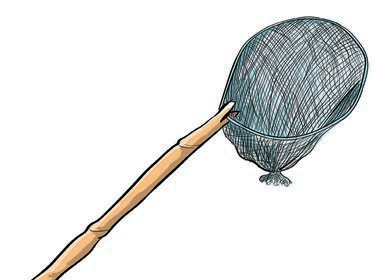

Nyavu ya kuvua samaki

Ndoano za kutega samaki
Kielelezo namba 6: Zana za asili za uvuvi
Uvuvi ulifanyika maeneo yenye mito, maziwa, bahari, mabwawa na madimbwi ya maji mengi.
Wavuvi walifunga ndoano kwa kamba na kuweka chambo ili kutega samaki.
Nyavu pia zilitupwa kwenye maji kuvua samaki.
Maarifa na ujuzi wa asili katika ufugaji
Maarifa na ujuzi katika ufugaji vilifanyika kwa kufuga mifugo katika maeneo yenye nyasi ili kupata chakula cha mifugo.
Mifugo iliyofugwa ni pamoja na ng’ombe, mbuzi na kondoo (chunguza Kielelezo namba 7).
Kielelezo namba 7: Maarifa na ujuzi wa asili katika ufugaji
FOR ONLINE READING ONLY